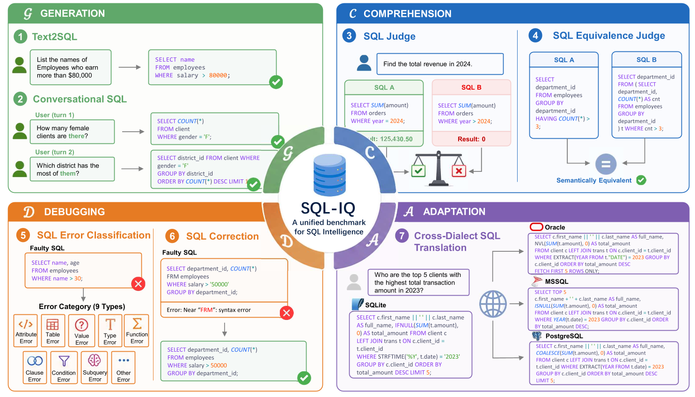

Dataset Overview
SQL-IQ is a comprehensive benchmark that evaluates LLMs across the full spectrum of SQL intelligence. It spans 4 dimensions and 7 tasks, covering generation, comprehension, debugging, and cross-dialect adaptation.

Tasks by Dimension
Text-to-SQL
Translate natural language questions into executable SQL queries given a database schema. This is the most fundamental SQL generation capability.
Conversational SQL
Generate SQL in multi-turn dialogue settings where context from previous turns must be understood and carried forward to produce correct queries.
SQL Equivalence Judge
Given two SQL queries, determine whether they are semantically equivalent — i.e., whether they always produce the same result on any valid database instance.
SQL Judge
Given a natural language question and two candidate SQL queries, select the one that correctly answers the question. Tests comparative SQL comprehension.
SQL Error Classification
Given a buggy SQL query, detect and classify the type of error present (e.g., syntax error, logic error, schema mismatch, etc.).
SQL Debugging
ExternalFix buggy SQL queries given error messages and database context. This task is sourced from the BIRD-CRITIC benchmark and evaluated using their framework.
SQL Translation
Translate SQL queries between different database dialects. Models must understand dialect-specific syntax and functions to produce equivalent queries in the target dialect.
Access the Data
The SQL-IQ benchmark data and evaluation code are hosted on GitHub. SQL Debugging uses an external repository (BIRD-CRITIC).